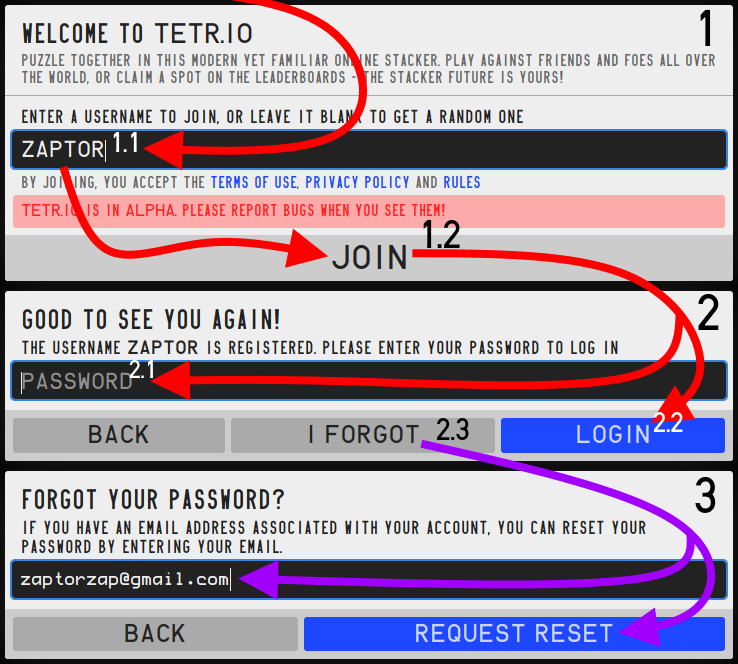
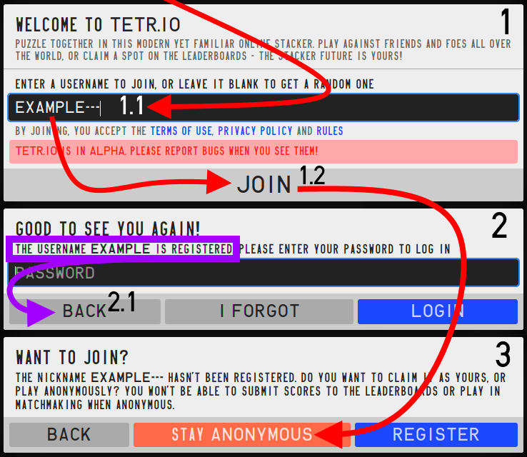
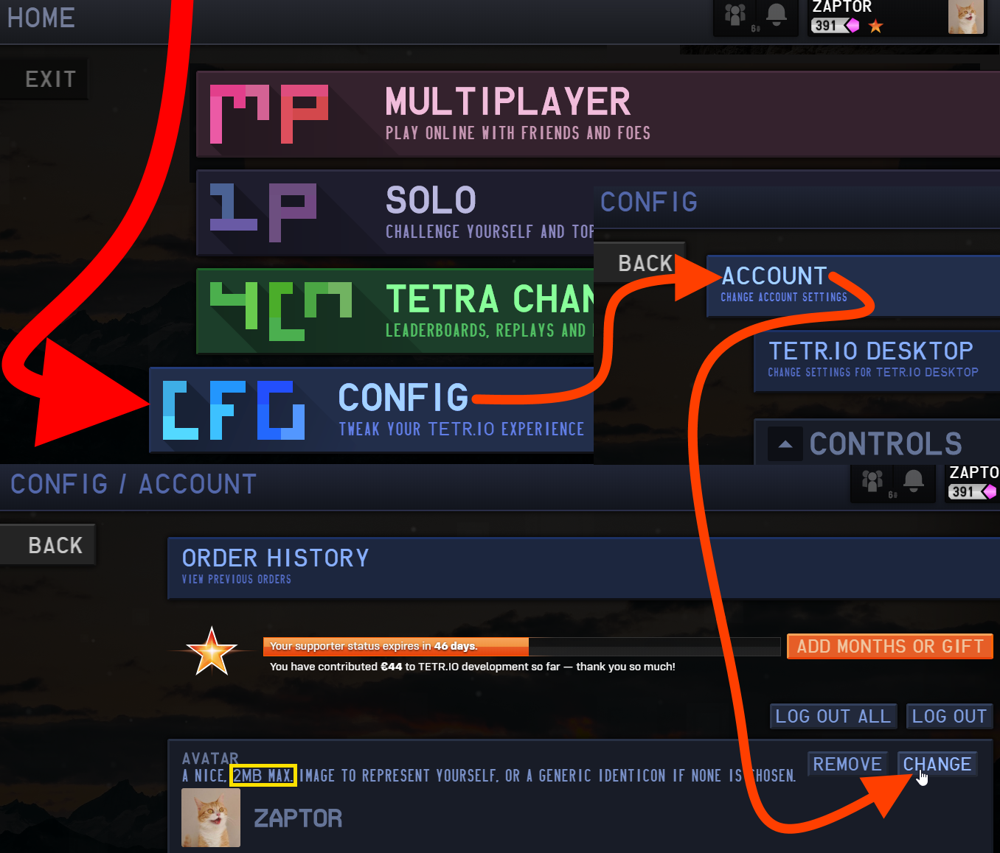

注册图解

登陆图解

匿名账户注册图解
账户设置
像其他在线服务一样，TETR.IO 的用户通过账户与他人区分。注册用户 可通过多种免费或付费的方式自定义游戏形象。下面是一些有关账户创建或自定义的问题。
注册register
欢迎游玩 TETR.IO！虽然可以简单地注册一个 "匿名" 账户，但只有正式注册的账户才能游玩 TETRA LEAGUE、保存 40 行与闪电战的记录、自定义个人信息与用户页（例如个人头像）等功能。
要创建 TETR.IO 账户，首先https://tetr.io/。若未注册，游戏会自动弹出注册对话框，然后：
- 输入用户名（1.1），点击 JOIN 按钮（1.2）
- 若提示你输入密码，则说明该用户名已被占用（2）：此时，需要退出并重新起一个用户名；
- 反之，若用户名未被占用，游戏会询问你保持匿名（STAY ANONYMOUS）或注册账户（REGISTER）（3）；
- 点击 REGISTER 按钮后，游戏会要求你输入邮箱与密码，其中邮箱为推荐项。
注意：根据https://tetr.io/about/rules/给出的小号政策，一名玩家只能拥有一个账户。请仔细检查账户名称：注册后唯一更改的方式是购买 TETR.IO 支持者。
登陆账户login
登陆账户并不困难。游戏的注册页面与登陆页面是一体的，要登陆已注册的账户，请按以下步骤操作：
- 游戏提示输入用户名以加入（ENTER A USERNAME TO JOIN）时（1），输入已注册账户的用户名，然后点击 JOIN（1.2）；
- 此时（2），游戏提示输入密码。输入密码后（2.1），点击 JOIN（2.2），这样就登陆游戏了。
重置密码passreset
若忘记密码，点击 I FORGOT（2.3）。此时游戏要求你提供注册账户时填写的 Email 地址。请确保填写的地址与注册时填写的一致。游戏若提示错误信息，请多尝试，可能只是输错了地址中的几个字。
注册匿名账户registeranon
TETR.IO 设计之初就想和其他 .IO 类游戏一样上手既玩，因此额外设计了虽有些许功能限制的匿名账户。此外，匿名账户不受小号政策影响，比如，如果想使用不同的输入设备游玩，就可以注册一个匿名账户来避免影响主账户的成绩。要注册匿名账户，只需点击 JOIN 按钮，游戏会自动为你生成一个用户名。匿名账户也可自创用户名，前提是该用户名不与现有的注册用户重复：
- 未登录 https://tetr.io/ 时（1），在窗口中输入用户名（1.1），然后点击 JOIN（1.2）；
- 若输入的用户名已被占用（2），游戏会提示输入密码。此时需要返回重新选择用户名（2.1）；
- 若该名字未被占用，点击保持匿名（STAY ANONYMOUS）即可注册匿名账户。
用户头像pfp
注册的 TETR.IO 用户可通过账户设置免费更改头像。下图展示了该设置项的具体位置，你可以在游戏中的 CONFIG 选项中找到它。
我的头像/横幅是全年龄！notnsfw
TETR.IO 回自动检查用户上传的头像与横幅，其依据是社区规则的第八条。该系统通过由机器学习构建的开源库运作，具体而言，是 GitHub 上的 NSFWJS 与 TensorFlow这两个项目，它们都已列在游戏的开源项目借用表。
 注意：
注意：NSFWJS 网页上使用的版本可能比 TETR.IO 实际使用的版本更高。
因此，检测系统可能会误判图片，并因此拒绝用户上传。用户有办法回避这一检查机制，但公布这一方法对游戏有较大风险，因此最直接的方式是换一张图片。
人类有惊人的视觉识别能力。而本项目会更倾向于与把全年龄图片误判为色图。这一特性让 NSFW JS 既实用又有趣。Humans are amazing at visual identification. NSFW tries to error more on the side of things being dirty than clean. It's part of what makes failures on NSFW JS entertaining as well as practical.
举报 TETR.IO 用户report
玩家信息卡的局部放大图。“举报用户”按钮位于“更多选项”选单中。
若想要举报违反the TETR.IO 社区规则的用户，请使用游戏内的举报系统。管理组不接受其它平台的举报（如 Discord 频道）。
只有注册用户才能提交举报，要举报另一名用户，可点击其资料卡片或用户名，或是在游戏内四连频道 (TETRA CHANNEL) 的搜索框中输入该用户名。资料卡中，点击箭头，然后点击举报图标以进入举报流程。在房间中提交的举报将自动附上该房间的聊天记录。
申请解封appeal
不要在 TETR.IO Discord 上申请解封！
你的消息很有可能会被忽略。
- 要想联系 TETR.IO 解决账户相关问题，请前往https://tetr.io/about/support/，按照提示操作；
- 要想解决技术性问题，请在 Discord 服务器的 #tetrio 频道提问。
- 提问之前烦请先浏览 FAQ 主题
- 若想提出意见或建议，请前往相应的 Discord 频道，或在 GitHub 上的 TETR.IO Issue Tracker 上提出。
Supporter 等级supporter
TETR.IO Supporter（TETR.IO 支持者）的等级由捐赠的总额度确定 —— 包括个人充值、赠予他人、与旧 Supporter 系统中的 Patreon 支持。可前往 CONFIG > ACCOUNT 查看。
每个等级的最低捐献额度如下：
- €0 | 一级
- €20 | ★ （二级）
- €80 | ★★ （三级）
- €250 | ★★★ （四级）
达到新的支持者等级后，该等级将永久保留。若支持者身份过期，徽章和昵称颜色暂时消失，但可在重获支持者身份后重新显示。 若捐赠总额度达到 200 欧元，则你的昵称会永久登入制作者名单。即使支持者身份过期，名单也不会将你的昵称移除。
认证verified
TETR.IO 的身份认证的授予由多种原因 —— 大体上有以下几种：TETR.IO 制作组成员（如 TETR.IO 开发者 OSK）、在 TETR.IO Discord 服务器的 Contributer 组的用户（如TETR.IO PLUS 的作者 UNIQMG）、取得杰出成就的玩家（如40行前世界纪录保持者 VINCEHD）、对社区有突出贡献的玩家（如 Underdogs Cups 系列锦标赛的主办方 CABOOZLED_PIE）。
此外，游戏在少数情况下也会将身份认证授予 TETR.IO 社区之外的知名人士（如osu! 知名主播 BTMC）。这类身份认证和一般的身份认证一样，都需通过具体情况分析授予。
 Authored by osk, here's a small sheet illustrating TETR.IO's fonts.
Authored by osk, here's a small sheet illustrating TETR.IO's fonts.